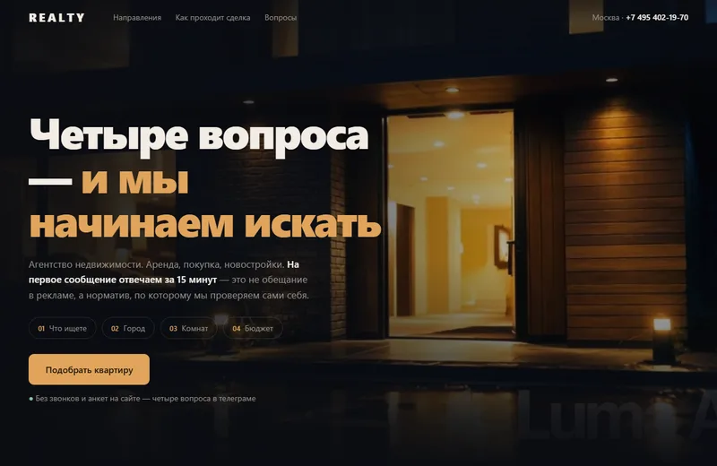
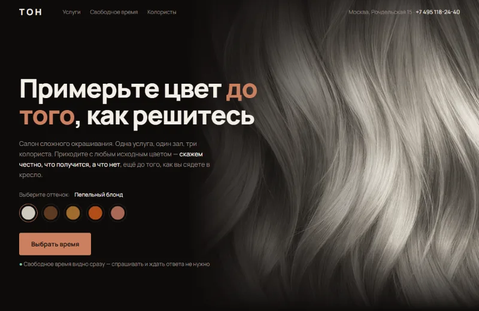
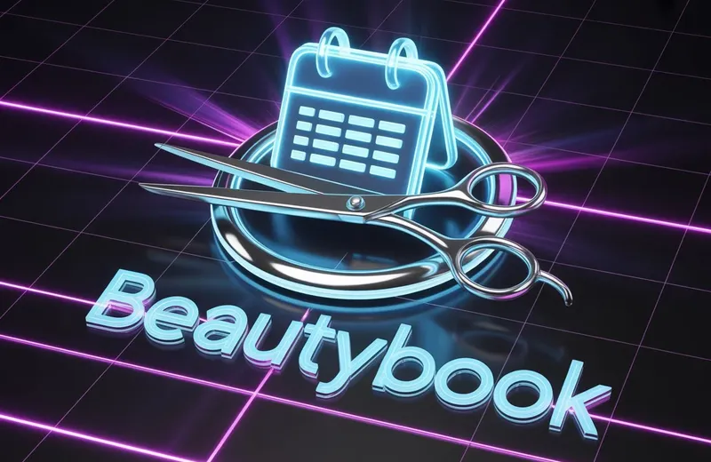
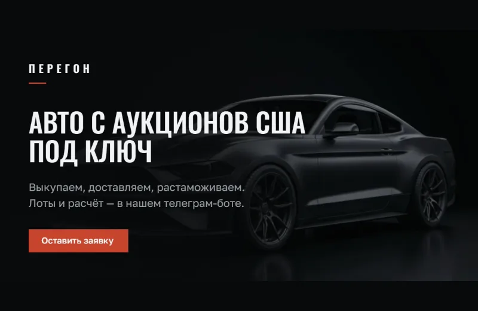
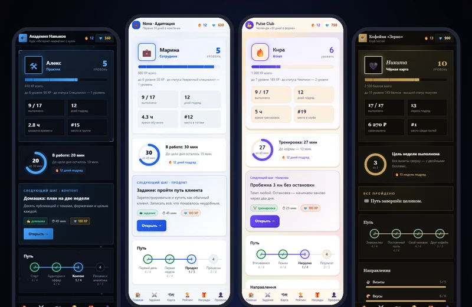

Сайты и боты, которые работают вместе
Кую их сам: от первой заготовки до кода, который вы получаете на руки
Разбираемся в задаче
Откуда приходит клиент, что он делает дальше и где сейчас теряются заявки
Рисую схему до первой строки кода
Сценарии бота, структура сайта, какие данные где хранятся. Всё согласуем заранее
Собираю по деталям
Пишу код и проверяю на живых ситуациях: занятое время, отмена, оплата, медленный интернет
Бот просыпается
Отвечает клиентам круглые сутки, записывает, напоминает и принимает оплату
Клиент выбирает время на сайте
Свободные окошки видны сразу, звонить и ждать ответа не нужно
Бот уточняет и берёт предоплату
Сам предлагает мастера, называет сумму и присылает кнопку оплаты
Заявка сразу в системе
Вы видите клиента, услугу, время и мастера. Ничего не нужно переписывать
Деньги пришли — запись подтверждена
Статус меняется сам, клиенту уходит напоминание за день до визита
Код и доступы — ваши
Запускаю на сервере и передаю всё, чтобы работало без меня
Обсудить проект15 проектов — сайты, боты, AI и CRM
Все проекты-

REALTY — агентство недвижимости Камера въезжает в дом, последний кадр становится фоном. Переходы через раздвижные двери. Открыть сайт -

ТОН — салон окрашивания Примерочная цвета волос и живое расписание записи прямо на первом экране. Открыть сайт -

BeautyBook Запись в один экран, CRM с выручкой и неявками, отзывы, программа лояльности. Открыть бота -

ПЕРЕГОН — авто из США Сайт компании, которая возит машины с аукционов. Считает смету и уводит в бота за лотами. Открыть сайт -

LevelUp Уровни, рейтинг и награды для школ, компаний, фитнеса и кофеен. Ниша, стиль и язык переключаются на лету. Открыть - DocuHelper Forex Консультант на базе ваших документов. Отвечает на вопросы по трейдингу быстро и точно. Открыть бота
Сколько стоит и сколько ждать
- Ботот 30 000 ₽Простой бот: заявки, запись, ответы на вопросы.
- Комплексное решениеот 70 000 ₽С AI и интеграциями. Точная смета — после уточнения задачи.
- Сроки3–7 днейПростые проекты. Сложные AI-решения и Mini Apps — от 2 недель.
- КодвашПосле полной оплаты передаю исключительные права и исходный код.
- Для стартаописание задачиТехническое задание или просто рассказ своими словами. Помогу составить ТЗ.
- Ответв течение дняКонсультация бесплатная и ни к чему не обязывает.
Опишите задачу своими словами. Отвечу в течение дня и скажу, сколько это будет стоить и сколько займёт.
Обсудить проект